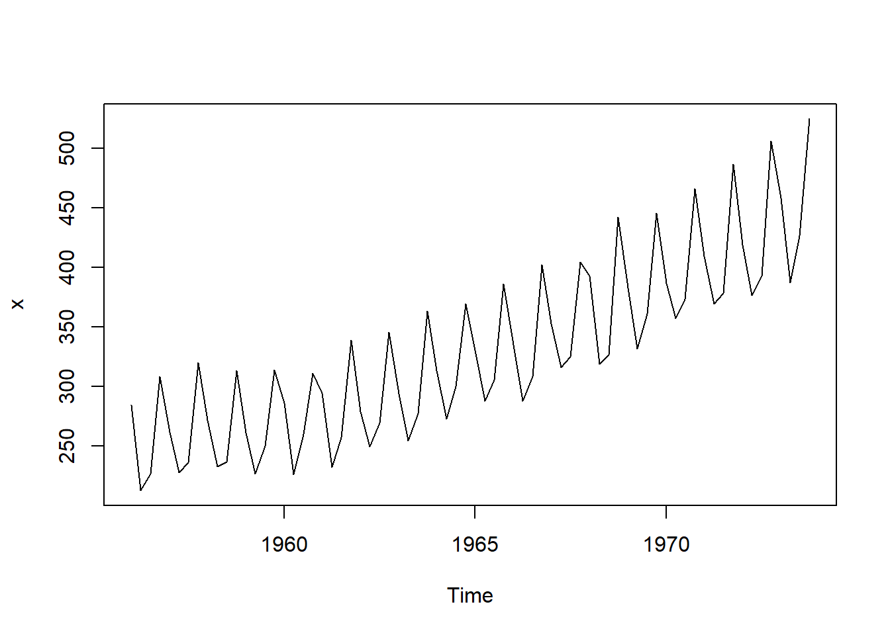

install.packages(c('xts','fpp2','TTR', 'quantmod','forecast'))AYU - Pod Week 4
Instruction
Open the Rmarkdown file of this assignment (link) in Rstudio.
Right under each question, insert a code chunk (you can use the hotkey Ctrl + Alt + I to add a code chunk) and code the solution for the question.
Once you are done answering all the question, Knit the file (Use: Ctrl + Shift + K or Click to Knit -> Knit to pdf or Word) to convert the Rmarkdown file into a pdf or word file to submit to Canvas.

1. Sample Codes
Time Series in R
There are multiple R objects to store a time series. In this practice, we will use the ts object (come with bases R) and the xts object to work with time series. First we will install the necessary packages.
Consider the series of quarterly beer production in Australia stored in the dataset beer.csv. These below codes will read the dataset and create a time series object ts.
library(tidyverse)
library(xts)
library(fpp2)
library(TTR)
t1 = read_csv("beer.csv")
# Change to a time series object
t1 = ts(t1, start = c(1956, 1), freq = 4)In the ts function, we use freq = 4 for quarterly data, freq = 12 for monthly data. The argument start = c(1956, 1) means the series start with the first quarter in 1956.
We then can plot the series using the plot function.
plot(t1)
Auroregression Models
Autoregression model of the first order is defined as
\[ y_t = \beta_0 +\beta_1 y_{t-1} +\epsilon_t \] where \(|\beta_1| < 1\), \(\epsilon \sim (0, \sigma^2)\).
We can use AR(1) for forecasting time series. The series should be tested for stationary before modeled by an autoregression model. In this example, we will use the uschange data in the fpp2 package to demonstrate the application of the AR(1) model.
# Create a series of Consumption
t2 = uschange[,"Consumption"]To test for stationarity we will inspect the autocorrelation plot. The horizontal axis in this plot shows \(r_1\) (correlation between \(y_t\) and \(y_{t-1}\) or Lag = 1), \(r_2\) (correlation between \(y_t\) and \(y_{t-2}\) or Lag = 2), and so on. Notice that \(r_0 = 1\) (correlation between \(y_t\) and itself).
acf(t2, lag.max = 100)We can see the the the autocorrelations when the lag increases are within the blue line and die out to zero. This indicates that the series is stationary and we can use AR(1) model on it. Notice that when data have a trend, the autocorrelations for small lags tend to be large and positive. So the ACF of trended time series tend to have positive values that slowly decrease as the lags increase.
# fit the model to the series
a2 = arima(t2, order = c(1,0,0))
plot(t2)
# plot the fitted series
lines(t2-a2$residuals, col = "red")Forecast the next value of the series (Consumption in the next quarter)
forecast(a2, h = 1) Point Forecast Lo 80 Hi 80 Lo 95 Hi 95
2016 Q4 0.7403201 -0.04432921 1.524969 -0.4596975 1.940338Practice 1
- Plot the ACF of the US Income Series (
uschange[,"Income"]). Verify that the series is stationary. - Use the AR(1) model to predict the income of the next quarter in the series.
AR(1) model on Stock time series
In this section, we will apply the AR(1) to a stock series. We first
# Check stationary of the stock
# Using ACF: for stationary:
# ACF drop to 0 quickly while ACF of non-stationary drop to 0 slowly.
# r1 of non-stationary is also large and positive.
library(xts)
library(quantmod)
library(forecast)
getSymbols("AAPL")[1] "AAPL"t3 = AAPL$AAPL.Open
t3 <- t3[index(t3) > "2023-01-01"]
AAPL = ts(as.numeric(t3))
acf(t3, lag.max = 100)Looking at the ACF, we observe that the correlations does not die out to zero but later go out of the blue lines. Thus this series is non-stationary and it is not reasonable to model the stock using the AR model. We will use a differencing techniques to transform the stock to a stationary series. Consider the difference stock
\[ d_{n} = y_{n+1} - y_n \]
d_AAPL = ts(as.numeric(diff(t3))[-1])
acf(d_AAPL, lag.max = 100)The ACF plot shows that the difference series is stationary and can be model by an AR model.
ar_AAPL = arima(d_AAPL, order = c(1,0,0))
plot(d_AAPL)
lines(d_AAPL-ar_AAPL$residuals, col = "red")Forecast the next observation of \(d_n\). Notice that \(y_{n+1} = y_n + d_n\), we can forecast \(y_{n+1}\) using \(y_n\) and \(d_n\)
d_n = forecast(ar_AAPL, h = 1)
y_next = d_n$mean + t3[length(t3)]
y_next = as.numeric(y_next)
y_next[1] 167.2378Practice 2
Following the above example to
Plot the ACF for the Microsoft stock series for 2023. Investigate the stationarity of the series.
Forecast the next value of the stock series.
Moving Average Smoothing
The plot shows that there is a seasonal component in the series. To see the trend of the series better we can use smoothing techniques. We will consider two techniques: moving average and exponential. With moving average, a new series is created by average the most recent observations of the original series. For example, moving average using the last three observations (\(k=3\)) using the below formula.
\[ s_{n+1} = \frac{y_n + y_{n-1} + y_{n-2}}{3} \]
Using this code to perform moving average smoothing and plot the smoothed series.
### Data 1
t1_sma = SMA(t1, n = 12)
plot(t1, type= "b", main = "Moving average annual trend")
lines(t1_sma, col = "red")Practice 3
Read the data in AirPassengers.csv
Create a monthly time series of
Number_Passengersstarted from 2000Plot the smoothed moving average series and the original series.
2. Questions
Run the all codes in the Section 1 and show all the results
Do Practice 1, 2 and 3.